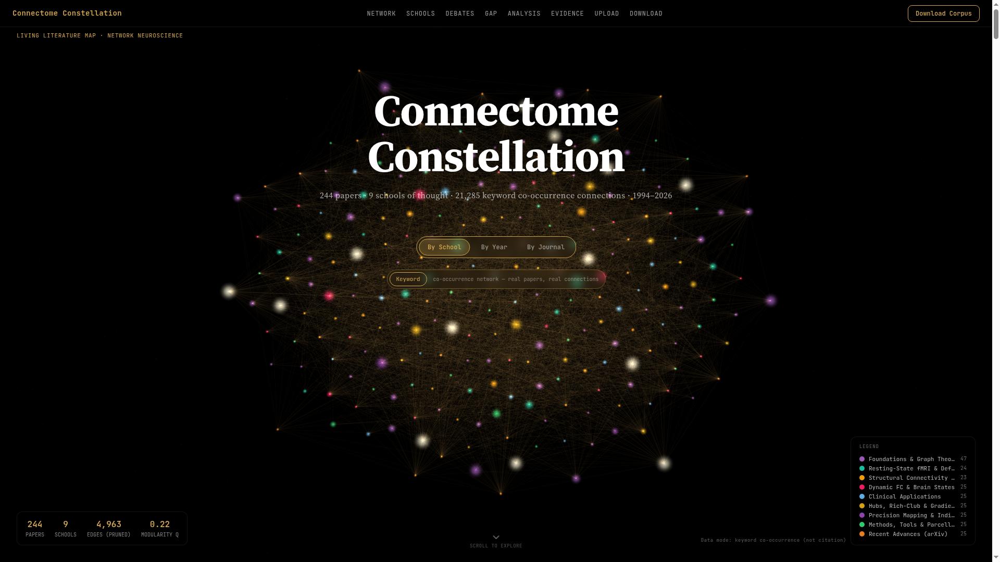
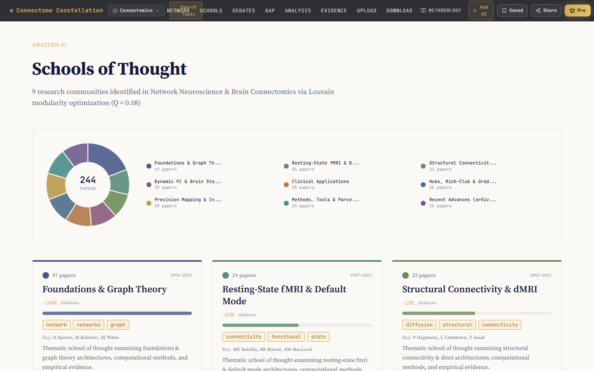
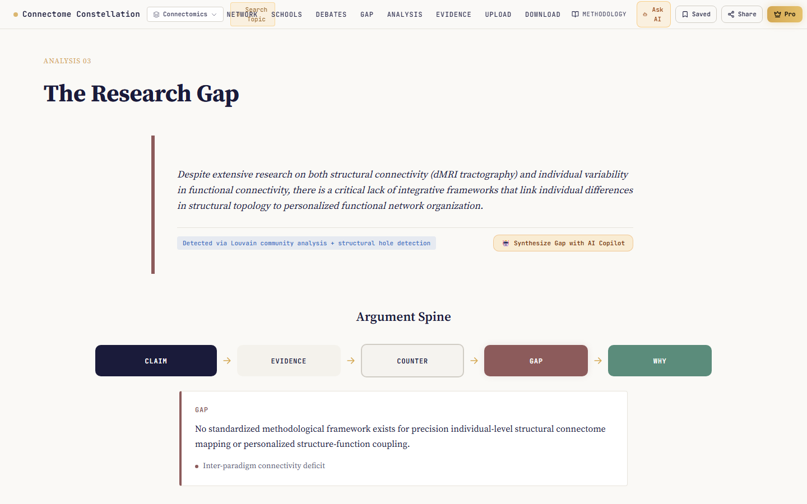
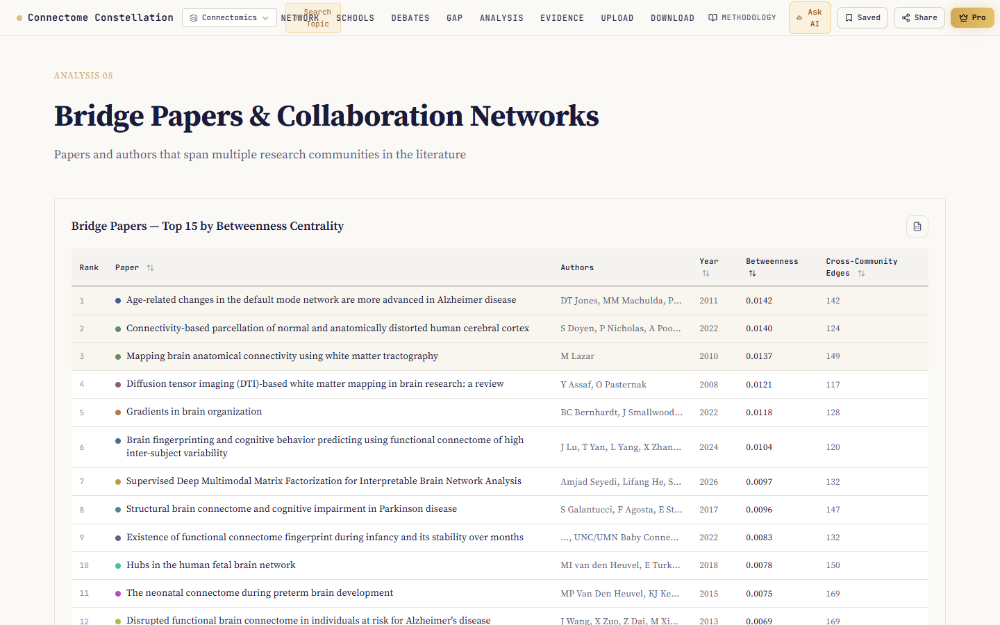
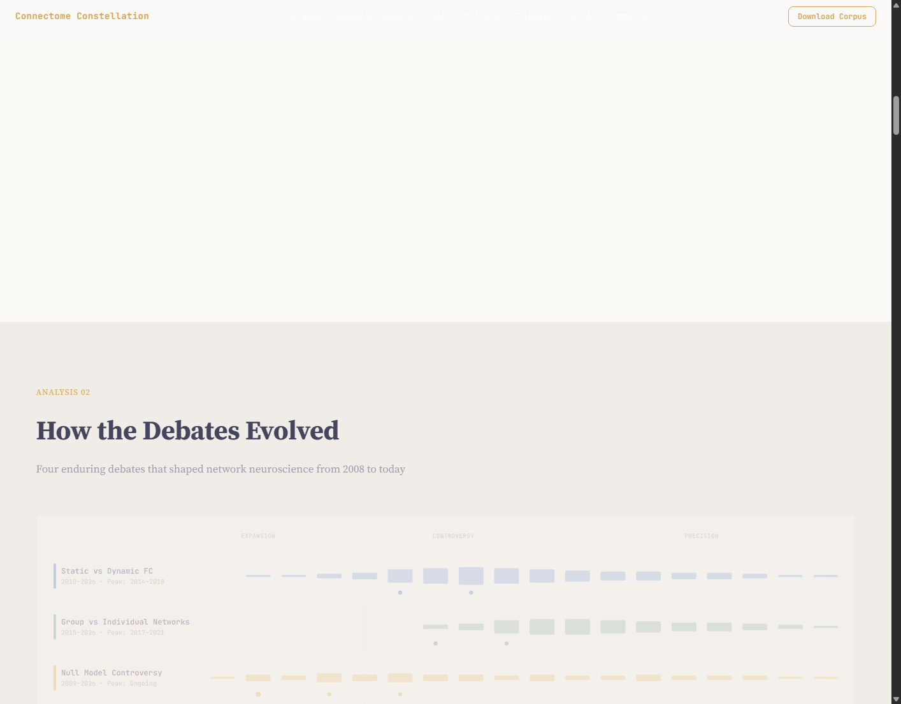
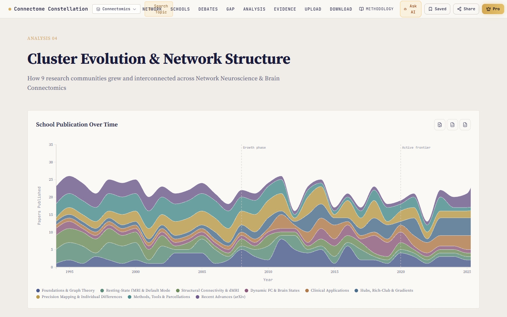
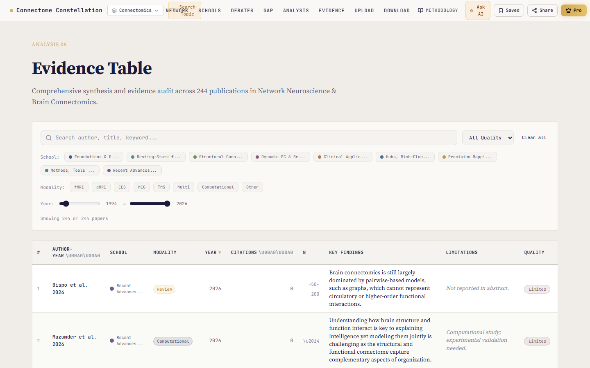
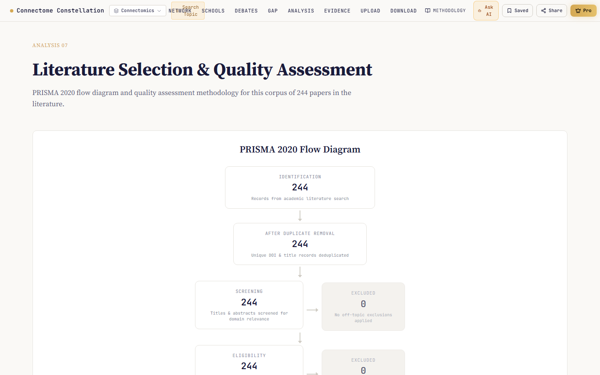
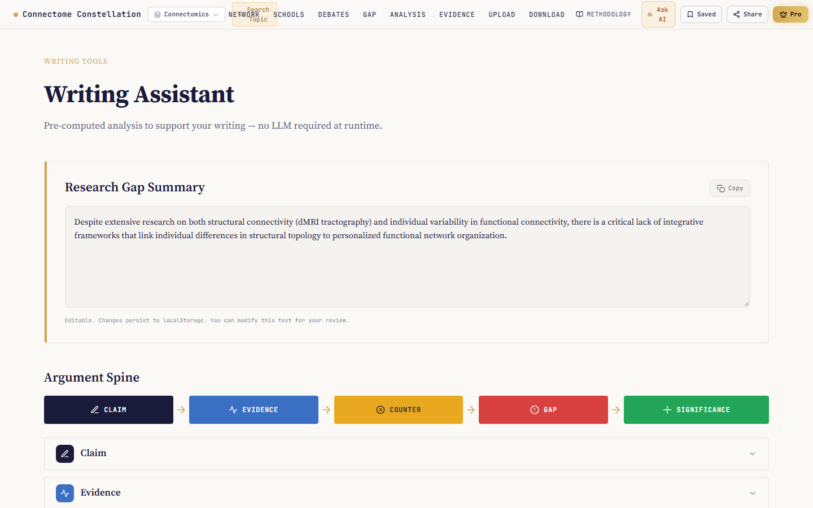

The world's first interactive research intelligence platform that transforms scientific literature into an explorable 3D knowledge constellation — complete with automated gap detection, debate tracking, and publication-ready PRISMA synthesis.
React 19 · Three.js · D3.js · Louvain Community Mining · OpenAlex API
Researchers spend hundreds of hours manually skimming PDFs, managing bloated Zotero libraries, and hand-crafting comparison spreadsheets. Existing bibliometric tools produce static, indecipherable "hairball" network graphs. None of them identify where knowledge is missing, which cross-disciplinary bridges connect fields, or how to turn discovery into a structured manuscript.
Scientific literature mapped as an immersive, force-directed cosmic network. Every star represents a peer-reviewed paper; each luminous edge represents co-citation and keyword affinity.

Real-time WebGL force-directed star map with community clustering and node drawers.
Louvain community detection identifies distinct paradigms with interactive donut charts.
Structural hole analysis isolates under-connected clusters to reveal unstudied frontiers.
Betweenness centrality ranking uncovers cross-disciplinary papers connecting silos.
Dialectical timeline mapping core academic controversies from Thesis to Synthesis.
Audit-ready database with methodology tagging, sample size N, and quality ratings.
D3 Streamgraph of 30-year temporal growth and school co-citation affinity matrix.
Automated systematic review flowchart complying with premier medical journal standards.
Argument spine editor, missing citation finder, and instant Word (.docx) export.
Unsupervised Louvain community detection algorithm automatically partitions hundreds of papers into coherent intellectual traditions.

Burt's structural hole theory applied to scientific knowledge networks — pinpointing unaddressed intersections where future breakthroughs lie.

Groundbreaking discoveries almost always emerge at the intersection of isolated fields. Our engine identifies high-betweenness connector works.

Science is not passive agreement; it is living dialectic. We map the longitudinal clash of ideas across decades of publications.

How 9 research communities grew, interconnected, and transformed across a 30-year chronological expanse (1995–2026).

An audit-ready, structured evidence database providing granular methodological inspection across all 244 publications.

Mandatory compliance for high-impact journals (Nature, Lancet, JAMA). What normally takes researchers days in Adobe Illustrator is generated automatically.

Closing the painful gap between exploring literature and writing the manuscript. From discovery to first draft in minutes.

Engineered for extreme responsiveness, computational graph rigor, and academic data privacy.
Connects to OpenAlex (250M+ works), CrossRef, PubMed, or custom user BibTeX/PDFs via streaming REST/JSON.
Louvain modularity Q-maximization, Brandes betweenness centrality, and Burt's structural hole constraints.
Three.js custom canvas sprite materials, additive blending, D3-Force 3D simulation, and orbit camera damping.
100% in-browser client-side network computation. Unpublished manuscripts and custom corpora never touch external servers.
| Capability | Living Literature Map | Connected Papers | VOSviewer | Litmaps | Elicit |
|---|---|---|---|---|---|
| 3D Interactive Constellation | ✓ | ✗ (2D only) | ✗ (Desktop 2D) | ✗ (2D timeline) | ✗ (No graph) |
| Automated Gap Detection | ✓ | ✗ | ✗ | ✗ | ✗ |
| Bridge Paper Centrality | ✓ | ✗ | ✗ | ✗ | ✗ |
| Dialectical Debate Tracker | ✓ | ✗ | ✗ | ✗ | ✗ |
| PRISMA 2020 Compliance | ✓ | ✗ | ✗ | ✗ | ✗ |
| Manuscript Writing Desk | ✓ | ✗ | ✗ | ✗ | ✓ (Chat only) |
| Browser-Native (Zero Install) | ✓ | ✓ | ✗ (Java app) | ✓ | ✓ |
Literature review is their #1 academic hurdle. Saves 4–8 weeks of grinding. High personal willingness to pay ($15/mo).
Campus-wide site licensing to improve institutional research output and grant win rates. $20K–$50K/year per institution.
Competitive literature surveillance, prior-art landscape analysis, and IP patent whitespace. $10K–$100K/year enterprise ACV.
How open-science sharing naturally converts individual students into $50k institutional deals.
Researchers generate free 3D literature maps for their thesis topic, discovering gaps in minutes.
Exported PRISMA diagrams and shareable interactive map URLs feature "Mapped with Living Literature Map".
Principal Investigators (PIs) upgrade to Team ($39/user) to review lab literature and collaborate on grant proposals.
Multiple active labs prompt university librarians to acquire campus-wide enterprise site licenses ($20k–$50k/yr).
Living Literature Map transforms how the world discovers, synthesizes, and builds upon human knowledge. The technology is built, the market is primed, and the timing is right.